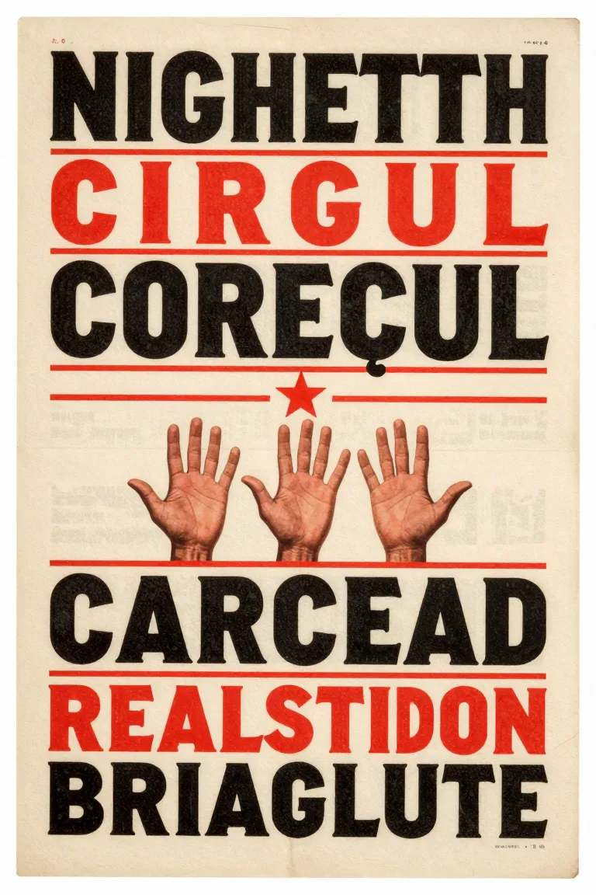

A bill set in large letters cut from end-grain wood, printed on a hand or a job press in one or two flat inks. Darius Wells made the type cheap in 1828; the auction, the circus and the theatre filled walls with stacked lines of fat faces and slabs.

Core thesis
A poster is a stack of words, and each line takes the largest and boldest type that fits the width.
Design principles
Centre each line and set it in the largest type that fills the measure.
Change the face, the width and the size from line to line; three to six faces on one sheet are normal.
Put the key word (the act, the date, the price) in the largest line, often in a second ink.
Print flat ink with no tone: black for the text and one red or blue for the accent.
Use rules, stars and a stock wood or metal cut as the only images.
Keep the tight vertical rhythm of the chase: little space between the lines.